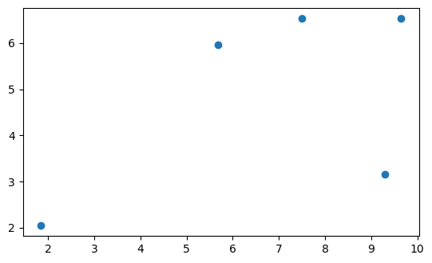
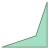
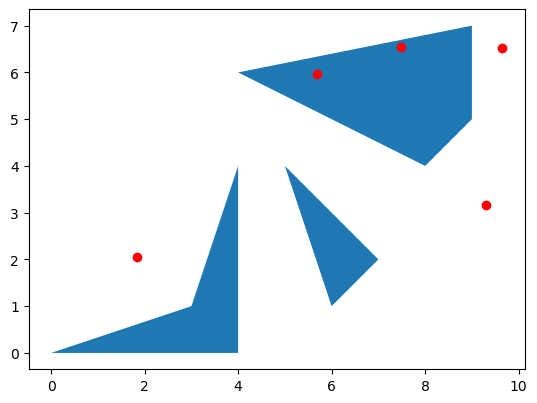
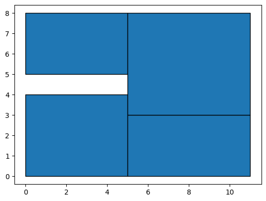
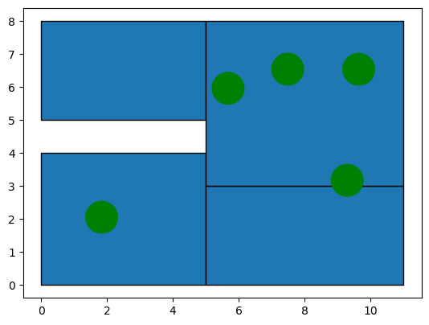
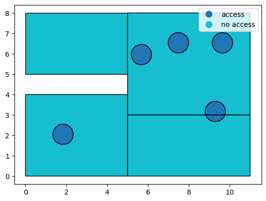
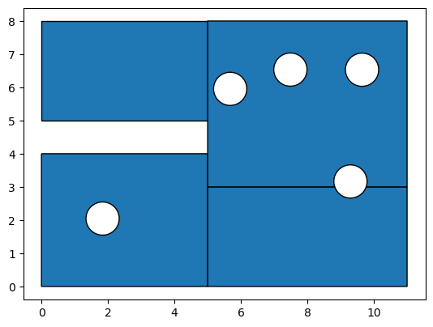

import numpy as np
import geopandas as gpd
from shapely.geometry import Point, PolygonSpatial Joins, Overlay, and Interpolation
Spatial Joins and Overlays
np.random.rand(5,2)*10array([[7.15409136, 3.95168515],
[1.77121415, 1.25989631],
[1.26536581, 9.51477855],
[7.716052 , 1.42392424],
[3.50191546, 1.70899307]])np.random.seed(12345)
points = [Point(pnt) for pnt in np.random.rand(5,2)*10]
points = gpd.GeoDataFrame(geometry=points)
points.plot();
pl0 = Polygon([[0,0], [4,0], [4,4], [3, 1]])pl0
pl1 = Polygon([(6,1), (7,2), (5,4), (6,1)])
pl2= Polygon([ (9,5), (9, 7), (4,6), (8,4)])pl_df = gpd.GeoDataFrame(geometry =[ pl0, pl1 , pl2])b = pl_df.plot()
points.plot(ax=b, color='r')<Axes: >
gpd.sjoin(points, pl_df)| geometry | index_right | |
|---|---|---|
| 2 | POINT (5.67725 5.95545) | 2 |
| 4 | POINT (7.48907 6.53570) | 2 |
gpd.sjoin(pl_df, points)| geometry | index_right | |
|---|---|---|
| 2 | POLYGON ((9.00000 5.00000, 9.00000 7.00000, 4.... | 2 |
| 2 | POLYGON ((9.00000 5.00000, 9.00000 7.00000, 4.... | 4 |
gpd.sjoin_nearest(points, pl_df)| geometry | index_right | |
|---|---|---|
| 0 | POINT (9.29616 3.16376) | 2 |
| 2 | POINT (5.67725 5.95545) | 2 |
| 3 | POINT (9.64515 6.53177) | 2 |
| 4 | POINT (7.48907 6.53570) | 2 |
| 1 | POINT (1.83919 2.04560) | 0 |
gpd.sjoin_nearest(pl_df, points)| geometry | index_right | |
|---|---|---|
| 0 | POLYGON ((0.00000 0.00000, 4.00000 0.00000, 4.... | 1 |
| 1 | POLYGON ((6.00000 1.00000, 7.00000 2.00000, 5.... | 2 |
| 2 | POLYGON ((9.00000 5.00000, 9.00000 7.00000, 4.... | 2 |
| 2 | POLYGON ((9.00000 5.00000, 9.00000 7.00000, 4.... | 4 |
How
gpd.sjoin(pl_df, points)| geometry | index_right | |
|---|---|---|
| 2 | POLYGON ((9.00000 5.00000, 9.00000 7.00000, 4.... | 2 |
| 2 | POLYGON ((9.00000 5.00000, 9.00000 7.00000, 4.... | 4 |
gpd.sjoin(pl_df, points, how='left') | geometry | index_right | |
|---|---|---|
| 0 | POLYGON ((0.00000 0.00000, 4.00000 0.00000, 4.... | NaN |
| 1 | POLYGON ((6.00000 1.00000, 7.00000 2.00000, 5.... | NaN |
| 2 | POLYGON ((9.00000 5.00000, 9.00000 7.00000, 4.... | 2.0 |
| 2 | POLYGON ((9.00000 5.00000, 9.00000 7.00000, 4.... | 4.0 |
gpd.sjoin(pl_df, points, how='right') | index_left | geometry | |
|---|---|---|
| 0 | NaN | POINT (9.29616 3.16376) |
| 1 | NaN | POINT (1.83919 2.04560) |
| 2 | 2.0 | POINT (5.67725 5.95545) |
| 3 | NaN | POINT (9.64515 6.53177) |
| 4 | 2.0 | POINT (7.48907 6.53570) |
gpd.sjoin(pl_df, points, how='inner') # default| geometry | index_right | |
|---|---|---|
| 2 | POLYGON ((9.00000 5.00000, 9.00000 7.00000, 4.... | 2 |
| 2 | POLYGON ((9.00000 5.00000, 9.00000 7.00000, 4.... | 4 |
Nearest
b = pl_df.plot()
points.plot(ax=b, color='r')<Axes: >
gpd.sjoin_nearest(pl_df, points)| geometry | index_right | |
|---|---|---|
| 0 | POLYGON ((0.00000 0.00000, 4.00000 0.00000, 4.... | 1 |
| 1 | POLYGON ((6.00000 1.00000, 7.00000 2.00000, 5.... | 2 |
| 2 | POLYGON ((9.00000 5.00000, 9.00000 7.00000, 4.... | 2 |
| 2 | POLYGON ((9.00000 5.00000, 9.00000 7.00000, 4.... | 4 |
gpd.sjoin_nearest(pl_df, points, distance_col='distance') # distance is 0 if point is in polygon and multiple records if poly contains more than 1 point| geometry | index_right | distance | |
|---|---|---|---|
| 0 | POLYGON ((0.00000 0.00000, 4.00000 0.00000, 4.... | 1 | 1.359027 |
| 1 | POLYGON ((6.00000 1.00000, 7.00000 2.00000, 5.... | 2 | 2.069406 |
| 2 | POLYGON ((9.00000 5.00000, 9.00000 7.00000, 4.... | 2 | 0.000000 |
| 2 | POLYGON ((9.00000 5.00000, 9.00000 7.00000, 4.... | 4 | 0.000000 |
gpd.sjoin_nearest(points, pl_df, distance_col='distance')| geometry | index_right | distance | |
|---|---|---|---|
| 0 | POINT (9.29616 3.16376) | 2 | 1.507838 |
| 2 | POINT (5.67725 5.95545) | 2 | 0.000000 |
| 3 | POINT (9.64515 6.53177) | 2 | 0.645145 |
| 4 | POINT (7.48907 6.53570) | 2 | 0.000000 |
| 1 | POINT (1.83919 2.04560) | 0 | 1.359027 |
Overlay
polys = [ [(0,0), (5,0), (5,4), (0,4)],
[(5,0), (11,0), (11,3), (5,3)],
[(0,5), (5,5), (5,8), (0,8)],
[ (5,3), (11,3), (11,8), (5, 8)]] pl_df = gpd.GeoDataFrame(geometry =[Polygon(poly) for poly in polys])pl_df.plot(edgecolor='k')<Axes: >
buffer = points.buffer(0.5)base = pl_df.plot(edgecolor='k')
buffer.plot(ax=base, color='g')<Axes: >
pl_df['pci'] = [45.5, 78.7, 30.5, 102.0]
pl_df['population'] = [4000, 2500, 3000, 1000]buffer = gpd.GeoDataFrame(geometry=buffer)
buffer['access'] = 'access'pl_df.overlay(buffer, how='union')| pci | population | access | geometry | |
|---|---|---|---|---|
| 0 | 45.5 | 4000 | access | POLYGON ((2.33678 1.99659, 2.32958 1.94806, 2.... |
| 1 | 78.7 | 2500 | access | POLYGON ((9.76797 3.00000, 9.75810 2.97241, 9.... |
| 2 | 102.0 | 1000 | access | POLYGON ((8.82435 3.00000, 8.81769 3.01861, 8.... |
| 3 | 102.0 | 1000 | access | POLYGON ((6.17484 5.90644, 6.16764 5.85790, 6.... |
| 4 | 102.0 | 1000 | access | POLYGON ((10.14274 6.48276, 10.13554 6.43423, ... |
| 5 | 102.0 | 1000 | access | POLYGON ((7.98666 6.48669, 7.97946 6.43815, 7.... |
| 6 | 45.5 | 4000 | NaN | POLYGON ((0.00000 4.00000, 5.00000 4.00000, 5.... |
| 7 | 78.7 | 2500 | NaN | POLYGON ((11.00000 3.00000, 11.00000 0.00000, ... |
| 8 | 30.5 | 3000 | NaN | POLYGON ((0.00000 5.00000, 5.00000 5.00000, 5.... |
| 9 | 102.0 | 1000 | NaN | POLYGON ((11.00000 3.00000, 9.76797 3.00000, 9... |
intermediate = pl_df.overlay(buffer, how='union')intermediate| pci | population | access | geometry | |
|---|---|---|---|---|
| 0 | 45.5 | 4000 | access | POLYGON ((2.33678 1.99659, 2.32958 1.94806, 2.... |
| 1 | 78.7 | 2500 | access | POLYGON ((9.76797 3.00000, 9.75810 2.97241, 9.... |
| 2 | 102.0 | 1000 | access | POLYGON ((8.82435 3.00000, 8.81769 3.01861, 8.... |
| 3 | 102.0 | 1000 | access | POLYGON ((6.17484 5.90644, 6.16764 5.85790, 6.... |
| 4 | 102.0 | 1000 | access | POLYGON ((10.14274 6.48276, 10.13554 6.43423, ... |
| 5 | 102.0 | 1000 | access | POLYGON ((7.98666 6.48669, 7.97946 6.43815, 7.... |
| 6 | 45.5 | 4000 | NaN | POLYGON ((0.00000 4.00000, 5.00000 4.00000, 5.... |
| 7 | 78.7 | 2500 | NaN | POLYGON ((11.00000 3.00000, 11.00000 0.00000, ... |
| 8 | 30.5 | 3000 | NaN | POLYGON ((0.00000 5.00000, 5.00000 5.00000, 5.... |
| 9 | 102.0 | 1000 | NaN | POLYGON ((11.00000 3.00000, 9.76797 3.00000, 9... |
intermediate.plot(edgecolor='k')<Axes: >intermediate["access"] = intermediate.access.fillna("no access")intermediate.plot('access', edgecolor='k', categorical=True, legend=True)<Axes: >
intermediate[intermediate.access=='no access'].plot(edgecolor='k')<Axes: >
Interpolation
import toblertobler.area_weighted.area_interpolate(pl_df, intermediate,
extensive_variables=['population'],
intensive_variables=['pci'])| population | pci | geometry | |
|---|---|---|---|
| 0 | 156.827435 | 45.500000 | POLYGON ((2.33678 1.99659, 2.32958 1.94806, 2.... |
| 1 | 32.141898 | 78.699995 | POLYGON ((9.76797 3.00000, 9.75810 2.97241, 9.... |
| 2 | 18.423850 | 102.000000 | POLYGON ((8.82435 3.00000, 8.81769 3.01861, 8.... |
| 3 | 26.137905 | 102.000000 | POLYGON ((6.17484 5.90644, 6.16764 5.85790, 6.... |
| 4 | 26.137905 | 102.000000 | POLYGON ((10.14274 6.48276, 10.13554 6.43423, ... |
| 5 | 26.137905 | 102.000000 | POLYGON ((7.98666 6.48669, 7.97946 6.43815, 7.... |
| 6 | 3843.172550 | 45.500000 | POLYGON ((0.00000 4.00000, 5.00000 4.00000, 5.... |
| 7 | 2467.858046 | 78.700000 | POLYGON ((11.00000 3.00000, 11.00000 0.00000, ... |
| 8 | 3000.000000 | 30.500000 | POLYGON ((0.00000 5.00000, 5.00000 5.00000, 5.... |
| 9 | 903.162479 | 102.000000 | POLYGON ((11.00000 3.00000, 9.76797 3.00000, 9... |
final = tobler.area_weighted.area_interpolate(pl_df, intermediate,
extensive_variables=['population'],
intensive_variables=['pci'])final.population.sum()10499.999973922968intermediate.population.sum()21000final['access'] = intermediate.accessfinal| population | pci | geometry | access | |
|---|---|---|---|---|
| 0 | 156.827435 | 45.500000 | POLYGON ((2.33678 1.99659, 2.32958 1.94806, 2.... | access |
| 1 | 32.141898 | 78.699995 | POLYGON ((9.76797 3.00000, 9.75810 2.97241, 9.... | access |
| 2 | 18.423850 | 102.000000 | POLYGON ((8.82435 3.00000, 8.81769 3.01861, 8.... | access |
| 3 | 26.137905 | 102.000000 | POLYGON ((6.17484 5.90644, 6.16764 5.85790, 6.... | access |
| 4 | 26.137905 | 102.000000 | POLYGON ((10.14274 6.48276, 10.13554 6.43423, ... | access |
| 5 | 26.137905 | 102.000000 | POLYGON ((7.98666 6.48669, 7.97946 6.43815, 7.... | access |
| 6 | 3843.172550 | 45.500000 | POLYGON ((0.00000 4.00000, 5.00000 4.00000, 5.... | no access |
| 7 | 2467.858046 | 78.700000 | POLYGON ((11.00000 3.00000, 11.00000 0.00000, ... | no access |
| 8 | 3000.000000 | 30.500000 | POLYGON ((0.00000 5.00000, 5.00000 5.00000, 5.... | no access |
| 9 | 903.162479 | 102.000000 | POLYGON ((11.00000 3.00000, 9.76797 3.00000, 9... | no access |
How many people live within the access buffers?
final[['population', 'access']].groupby(by='access').sum()| population | |
|---|---|
| access | |
| access | 285.806898 |
| no access | 10214.193076 |
What are the income levels in the two areas?
final[['pci', 'access']].groupby(by='access').mean()| pci | |
|---|---|
| access | |
| access | 88.699999 |
| no access | 64.175000 |